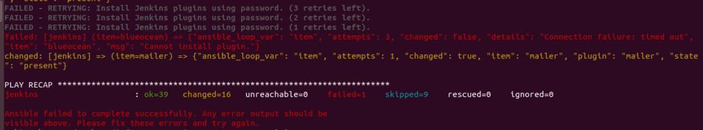
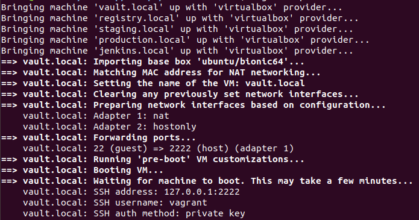
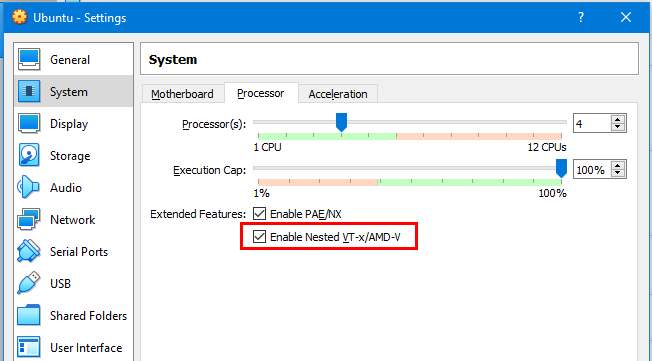

Practical DevOps - The Lab
Troubleshooting
1. Vagrant stuck/Network Disconnected/Ansible Error as shown below
 The best solution here is to first check the status using
vagrant status Then identify the machine which caused a problem. For Ex: logstash.devops Then
vagrant destroy logstash.devops -f Finally , bring up and provision all those machines which are not in running state
vagrant up <machine-1> <machine-2> <machine-3> and so on… Below example highlights all the steps
NOTE: If you are destroying staging.devops production.devops and archiver.devops then ensure that once these machines are up you should also run
vagrant up jenkins.devops --provision The reason why we need to do this is because Jenkins needs to read the SSH keys of these servers in order to execute commands remotely.
2. Production Application is failing to start
If your production application is not showing any data its most likely because the vault token has expired. The best solution is to regenerate it using the following commands
vagrant ssh vault.devops vault status cat /etc/vault/rootkey | vault login - vault policy list vault token create -policy=mysql_db 3. Vagrant SSH getting stuck or Vagrant machines not booting

Check if Virtualization is enabled in your Host If you are running inside an Ubuntu Guest VM then ensure that virtualization has been enabled “vt-x” as shown below for Virtualbox.

4. Jenkins Version Update
When installing Jenkins using the geerlinguy-jenkins-role there is an open issues where any version above 2.191 the automatic plugin installation fails. Below is the link to the issues in question. https://github.com/geerlingguy/ansible-role-jenkins/issues/269 Hence, while provisioning Jenkins i am using version 2.330 and post provisioning if you would like to update Jenkins then peruse the commands below.
vagrant ssh jenkins.devops
sudo service jenkins stop
cd /usr/share/jenkins
sudo curl -o jenkins.war http://ftp-chi.osuosl.org/pub/jenkins/war/2.330/jenkins.war
sudo service jenkins restart